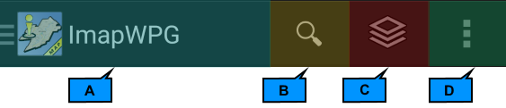
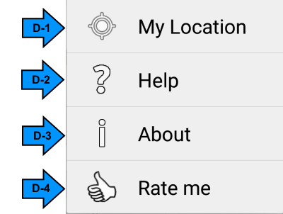

Action bar:
The action bar is located on the top of the screen. It provides key information and functions such as Application title, Address Search, Layer button and "More" button. The more button contains sub functions mylocation, help and about.

A: Application title: Tap it to open and close "Feature Drawer".
B: Address Search: tap the magnifying glass icon and enter an address. The address must start with street number followed by street name. You do not need to type full street name. For example: 450 broa and 450 Broadway will return the same result. If your search returned multiple results, a dialog box with a list of matching addresses will be presented. Tap the desired address on the list to move the map to that location.
C: Layer Button: Tap the layer button to open and close "Feature Drawer".
D: Tap "More"button to view sub functions mylocation, help, and about.

D-1: MyLocation: tap this button to move the map to your current location.
D-2: Help: You wouldn't be here unless you had tapped help button.
D-3: Displays how this application came about.
D-4: Rate me and support further development.